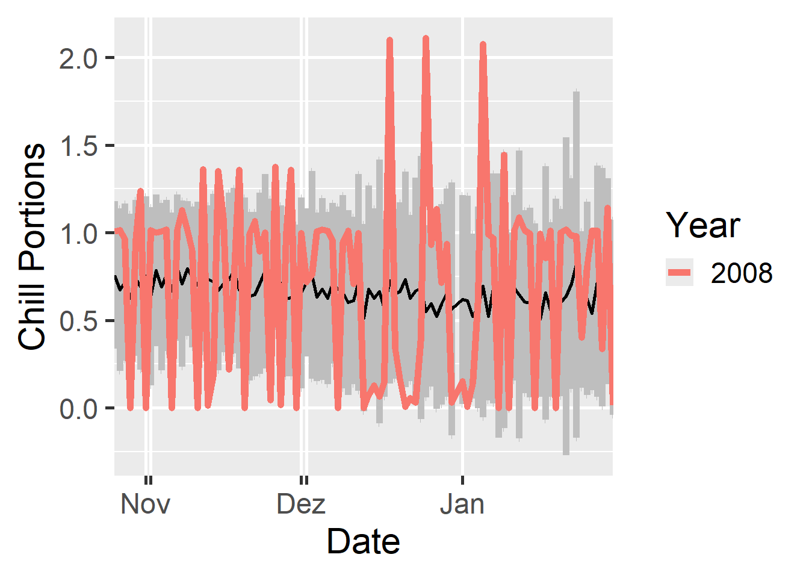
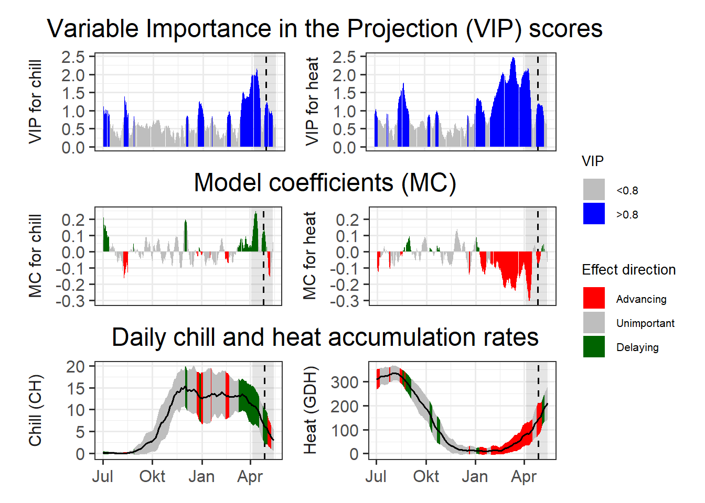
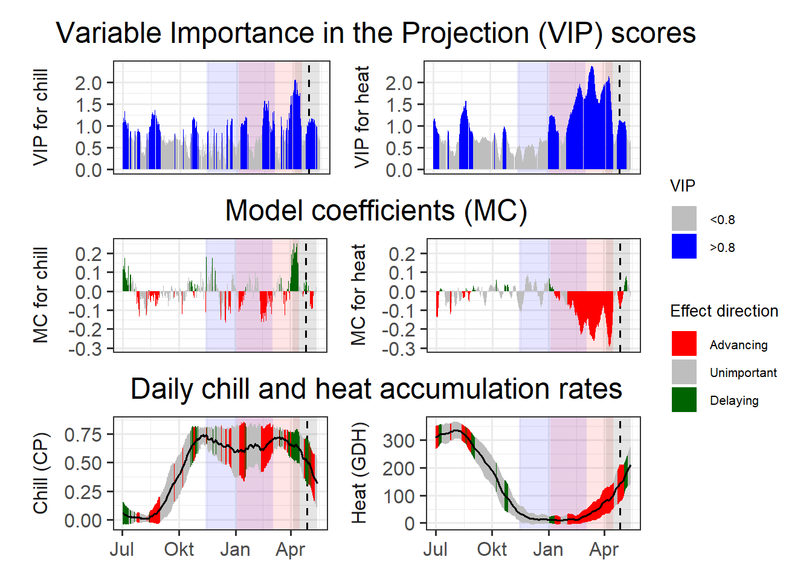

Chapter 23 — PLS regression with agroclimatic metrics
This chapter applies PLS regression with agroclimatic metrics to separate chilling and forcing processes and assess whether their effects on phenology can be clearly distinguished.
PLS regression using chill and heat metrics
Repeat the PLS_chill_force procedure for the ‘Roter Boskoop’ dataset. Include plots of daily chill and heat accumulation
Load packages and prepare hourly temperature data
library(chillR)
library(tidyverse)
temps_hourly <- read_tab("data/TMaxTMin1958-2019_patched.csv") %>%
stack_hourly_temps(latitude = 50.6)
head(temps_hourly$hourtemps)## DATE YEARMODA Year Month Day Tmin Tmax Tmin_source Tmax_source no_Tmin no_Tmax JDay
## 1 01-01-58 19580101 1958 1 1 5 7.5 <NA> <NA> FALSE FALSE 1
## 22452 01-01-58 19580101 1958 1 1 5 7.5 <NA> <NA> FALSE FALSE 1
## 44903 01-01-58 19580101 1958 1 1 5 7.5 <NA> <NA> FALSE FALSE 1
## 67354 01-01-58 19580101 1958 1 1 5 7.5 <NA> <NA> FALSE FALSE 1
## 89805 01-01-58 19580101 1958 1 1 5 7.5 <NA> <NA> FALSE FALSE 1
## 112256 01-01-58 19580101 1958 1 1 5 7.5 <NA> <NA> FALSE FALSE 1
## Hour Temp
## 1 0 5
## 22452 1 5
## 44903 2 5
## 67354 3 5
## 89805 4 5
## 112256 5 5Calculate daily chill and heat metrics
daychill <- daily_chill(hourtemps = temps_hourly,
running_mean = 1,
models = list(
Chilling_Hours = Chilling_Hours,
Utah_Chill_Units = Utah_Model,
Chill_Portions = Dynamic_Model,
GDH = GDH)
)
head(daychill$daily_chill)## YYMMDD Year Month Day Chilling_Hours Utah_Chill_Units Chill_Portions GDH Tmean
## 1 19580101 1958 1 1 21 24.0 0.00000000 9.7845597 5.391120
## 2 19580102 1958 1 2 16 16.0 0.44448963 12.7332663 3.399713
## 3 19580103 1958 1 3 5 0.0 0.03830263 0.0000000 -2.601803
## 4 19580104 1958 1 4 10 3.0 0.32927146 0.0000000 -1.676056
## 5 19580105 1958 1 5 24 24.0 1.39200313 0.0000000 3.020140
## 6 19580106 1958 1 6 24 21.5 1.11615873 0.4716365 3.284117
## no_Tmin no_Tmax
## 1 FALSE FALSE
## 2 FALSE FALSE
## 3 FALSE FALSE
## 4 FALSE FALSE
## 5 FALSE TRUE
## 6 FALSE FALSEVisualize daily chill accumulation
dc <- make_daily_chill_plot2(daychill,
metrics = c("Chill_Portions"),
cumulative = FALSE,
startdate = 300,
enddate = 30,
focusyears = c(2008),
metriclabels = "Chill Portions")
dc <- make_daily_chill_plot2(daychill,
metrics = c("Chill_Portions"),
cumulative = TRUE,
startdate = 300,
enddate = 30,
focusyears = c(2008),
metriclabels = "Chill Portions")
Prepare phenological bloom data (Roter Boskoop)
Roter_first <- read_tab("data/Roter_Boskoop_bloom_1958_2019.csv") %>%
select(Pheno_year, First_bloom) %>%
mutate(Year = as.numeric(substr(First_bloom, 1, 4)),
Month = as.numeric(substr(First_bloom, 5, 6)),
Day = as.numeric(substr(First_bloom, 7, 8))) %>%
make_JDay() %>%
select(Pheno_year,
JDay) %>%
rename(Year = Pheno_year,
pheno = JDay)Run PLS regression with chill and heat metrics
plscf <- PLS_chill_force(daily_chill_obj = daychill,
bio_data_frame = Roter_first,
split_month = 6,
chill_models = "Chill_Portions",
heat_models = "GDH")
head(plscf$Chill_Portions$GDH$PLS_summary)## Date Type JDay Coef VIP MetricMean MetricStdev
## 1 701 Chill -183 0.136520602 0.8277375 0.05017200 0.2205416
## 2 702 Chill -182 -0.008427281 0.3037853 0.04992673 0.2194706
## 3 703 Chill -181 0.056906091 0.6709700 0.05016162 0.2204947
## 4 704 Chill -180 -0.182946604 0.8110355 0.06711669 0.2532628
## 5 705 Chill -179 0.211426946 1.7753630 0.08346337 0.2792043
## 6 706 Chill -178 0.000000000 0.0000000 0.00000000 0.0000000Define plotting function for PLS chill–forcing results
plot_PLS_chill_force <- function(plscf,
chill_metric = "Chill_Portions",
heat_metric = "GDH",
chill_label = "CP",
heat_label = "GDH",
chill_phase = c(-48, 62),
heat_phase = c(3, 105.5))
{
PLS_gg <- plscf[[chill_metric]][[heat_metric]]$PLS_summary %>%
mutate(Month = trunc(Date/100),
Day = Date - Month * 100,
Date = ISOdate(2002,
Month,
Day))
PLS_gg[PLS_gg$JDay <= 0,"Date"]<-
ISOdate(2001,
PLS_gg$Month[PLS_gg$JDay <= 0],
PLS_gg$Day[PLS_gg$JDay <= 0])
PLS_gg <- PLS_gg %>%
mutate(VIP_importance = VIP >= 0.8,
VIP_Coeff = factor(sign(Coef) * VIP_importance))
chill_start_date <- ISOdate(2001,
12,
31) + chill_phase[1] * 24 * 3600
chill_end_date <- ISOdate(2001,
12,
31) + chill_phase[2] * 24 * 3600
heat_start_date <- ISOdate(2001,
12,
31) + heat_phase[1] * 24 * 3600
heat_end_date <- ISOdate(2001,
12,
31) + heat_phase[2] * 24 * 3600
temp_plot <- ggplot(PLS_gg) +
annotate("rect",
xmin = chill_start_date,
xmax = chill_end_date,
ymin = -Inf,
ymax = Inf,
alpha = .1,
fill = "blue") +
annotate("rect",
xmin = heat_start_date,
xmax = heat_end_date,
ymin = -Inf,
ymax = Inf,
alpha = .1,
fill = "red") +
annotate("rect",
xmin = ISOdate(2001,
12,
31) +
min(plscf$pheno$pheno,
na.rm = TRUE) * 24 * 3600,
xmax = ISOdate(2001,
12,
31) +
max(plscf$pheno$pheno,
na.rm = TRUE) * 24 * 3600,
ymin = -Inf,
ymax = Inf,
alpha = .1,
fill = "black") +
geom_vline(xintercept = ISOdate(2001,
12,
31) +
median(plscf$pheno$pheno,
na.rm=TRUE) * 24 * 3600,
linetype = "dashed") +
geom_ribbon(aes(x = Date,
ymin = MetricMean - MetricStdev ,
ymax = MetricMean + MetricStdev ),
fill = "grey") +
geom_ribbon(aes(x = Date,
ymin = MetricMean - MetricStdev * (VIP_Coeff == -1),
ymax = MetricMean + MetricStdev * (VIP_Coeff == -1)),
fill = "red") +
geom_ribbon(aes(x = Date,
ymin = MetricMean - MetricStdev * (VIP_Coeff == 1),
ymax = MetricMean + MetricStdev * (VIP_Coeff == 1)),
fill = "dark green") +
geom_line(aes(x = Date,
y = MetricMean)) +
facet_wrap(vars(Type),
scales = "free_y",
strip.position = "left",
labeller =
labeller(
Type =
as_labeller(c(Chill = paste0("Chill (",
chill_label,
")"),
Heat = paste0("Heat (",
heat_label,
")"))))) +
ggtitle("Daily chill and heat accumulation rates") +
theme_bw(base_size = 15) +
theme(strip.background = element_blank(),
strip.placement = "outside",
strip.text.y = element_text(size = 12),
plot.title = element_text(hjust = 0.5),
axis.title.y = element_blank()
)
VIP_plot <- ggplot(PLS_gg,
aes(x = Date,
y = VIP)) +
annotate("rect",
xmin = chill_start_date,
xmax = chill_end_date,
ymin = -Inf,
ymax = Inf,
alpha = .1,
fill = "blue") +
annotate("rect",
xmin = heat_start_date,
xmax = heat_end_date,
ymin = -Inf,
ymax = Inf,
alpha = .1,
fill = "red") +
annotate("rect",
xmin = ISOdate(2001,
12,
31) + min(plscf$pheno$pheno,
na.rm = TRUE) * 24 * 3600,
xmax = ISOdate(2001,
12,
31) + max(plscf$pheno$pheno,
na.rm = TRUE) * 24 * 3600,
ymin = -Inf,
ymax = Inf,
alpha = .1,
fill = "black") +
geom_vline(xintercept = ISOdate(2001,
12,
31) + median(plscf$pheno$pheno,
na.rm = TRUE) * 24 * 3600,
linetype = "dashed") +
geom_bar(stat = 'identity',
aes(fill = VIP>0.8)) +
facet_wrap(vars(Type),
scales = "free",
strip.position = "left",
labeller =
labeller(
Type = as_labeller(c(Chill="VIP for chill",
Heat="VIP for heat")))) +
scale_y_continuous(
limits = c(0,
max(plscf[[chill_metric]][[heat_metric]]$PLS_summary$VIP))) +
ggtitle("Variable Importance in the Projection (VIP) scores") +
theme_bw(base_size = 15) +
theme(strip.background = element_blank(),
strip.placement = "outside",
strip.text.y = element_text(size = 12),
plot.title = element_text(hjust = 0.5),
axis.title.y = element_blank()
) +
scale_fill_manual(name = "VIP",
labels = c("<0.8", ">0.8"),
values = c("FALSE" = "grey",
"TRUE" = "blue")) +
theme(axis.text.x = element_blank(),
axis.ticks.x = element_blank(),
axis.title.x = element_blank(),
axis.title.y = element_blank())
coeff_plot <- ggplot(PLS_gg,
aes(x = Date,
y = Coef)) +
annotate("rect",
xmin = chill_start_date,
xmax = chill_end_date,
ymin = -Inf,
ymax = Inf,
alpha = .1,
fill = "blue") +
annotate("rect",
xmin = heat_start_date,
xmax = heat_end_date,
ymin = -Inf,
ymax = Inf,
alpha = .1,
fill = "red") +
annotate("rect",
xmin = ISOdate(2001,
12,
31) + min(plscf$pheno$pheno,
na.rm = TRUE) * 24 * 3600,
xmax = ISOdate(2001,
12,
31) + max(plscf$pheno$pheno,
na.rm = TRUE) * 24 * 3600,
ymin = -Inf,
ymax = Inf,
alpha = .1,
fill = "black") +
geom_vline(xintercept = ISOdate(2001,
12,
31) + median(plscf$pheno$pheno,
na.rm = TRUE) * 24 * 3600,
linetype = "dashed") +
geom_bar(stat = 'identity',
aes(fill = VIP_Coeff)) +
facet_wrap(vars(Type),
scales = "free",
strip.position = "left",
labeller =
labeller(
Type = as_labeller(c(Chill = "MC for chill",
Heat = "MC for heat")))) +
scale_y_continuous(
limits = c(min(plscf[[chill_metric]][[heat_metric]]$PLS_summary$Coef),
max(plscf[[chill_metric]][[heat_metric]]$PLS_summary$Coef))) +
ggtitle("Model coefficients (MC)") +
theme_bw(base_size = 15) +
theme(strip.background = element_blank(),
strip.placement = "outside",
strip.text.y = element_text(size = 12),
plot.title = element_text(hjust = 0.5),
axis.title.y = element_blank()
) +
scale_fill_manual(name = "Effect direction",
labels = c("Advancing",
"Unimportant",
"Delaying"),
values = c("-1" = "red",
"0" = "grey",
"1" = "dark green")) +
ylab("PLS coefficient") +
theme(axis.text.x = element_blank(),
axis.ticks.x = element_blank(),
axis.title.x = element_blank(),
axis.title.y = element_blank())
library(patchwork)
plot <- (VIP_plot +
coeff_plot +
temp_plot +
plot_layout(ncol = 1,
guides = "collect")
) & theme(legend.position = "right",
legend.text = element_text(size = 8),
legend.title = element_text(size = 10),
axis.title.x = element_blank())
plot
}Re-run analysis with smoothed daily metrics
daychill <- daily_chill(hourtemps = temps_hourly,
running_mean = 11,
models = list(Chilling_Hours = Chilling_Hours,
Utah_Chill_Units = Utah_Model,
Chill_Portions = Dynamic_Model,
GDH = GDH)
)
plscf <- PLS_chill_force(daily_chill_obj = daychill,
bio_data_frame = Roter_first,
split_month = 6,
chill_models = c("Chilling_Hours",
"Utah_Chill_Units",
"Chill_Portions"),
heat_models = c("GDH"))Plot results for individual chill models
plot_PLS_chill_force(plscf,
chill_metric = "Chilling_Hours",
heat_metric = "GDH",
chill_label = "CH",
heat_label = "GDH",
chill_phase = c(0,0),
heat_phase = c(0,0))
plot_PLS_chill_force(plscf,
chill_metric = "Utah_Chill_Units",
heat_metric = "GDH",
chill_label = "CU",
heat_label = "GDH",
chill_phase = c(0,0),
heat_phase = c(0,0))

Delineating chilling and forcing phases across chill models
Run PLS_chill_force analyses for all three major chill models. Delineate your best estimates of chilling and forcing phases for all of them.
Chilling phase:
- Winter VIP values were intermittent and rarely exceeded the importance threshold for extended period
- Model coefficients during winter alternated between positive and negative values
- This indicates that winter temperature effects on bloom timing were inconsistent
- No clear or continuous chilling phase could be delineated for any chill model
- Chilling requirements are likely fulfilled every year and therefore do not drive interannual variation in bloom dates
Forcing phase:
- VIP values were consistently high (> 0.8) from late winter to spring
- Model coefficients during this period were predominantly negative
- Warmer temperatures during this phase consistently advanced bloom -> A clear forcing phase was identified
Best estimates Chilling phase: no clearly delineable period
Forcing phase: approximately January to April
Visualization and interpretation of chilling and forcing phases
Plot results for all three analyses, including shaded plot areas for the chilling and forcing periods you estimated.
- Forcing periods were shaded in red (January–April)
- No chilling period was shaded, as no consistent chilling phase could be identified
- The plots visually confirm that bloom timing is controlled primarily by spring forcing temperatures